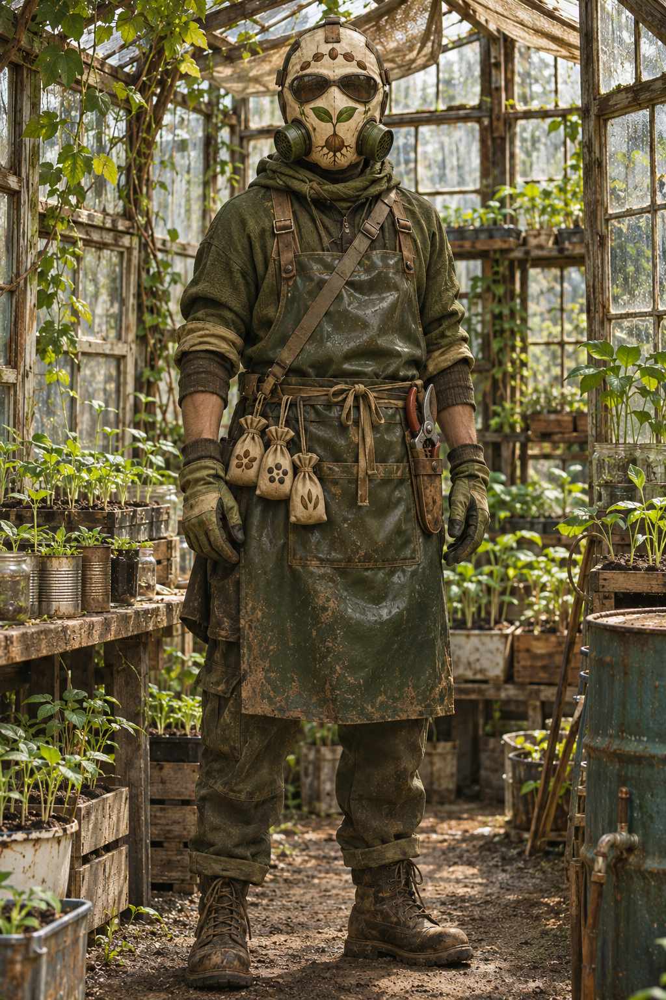

Quando ficou claro que os estoques antigos não durariam para sempre, Semente começou a separar o que podia ser replantado e o que precisava ser consumido.
PROPOSTA DE LORE // EM REVISÃO
SEMENTE.
Semente cuida dos pequenos cultivos e da reserva de sementes. Sua máscara integral traz um broto pintado: um lembrete de que a sobrevivência também depende do que pode voltar a crescer.
ABRIR ARQUIVO FOTOGRÁFICO →
Este dossiê apresenta uma proposta revisável com base no conceito visual e na função do personagem. Idade, nome civil, datas e vínculos pessoais ficam em aberto quando ainda não foram definidos.
O que a extinção
deixou nele.
Os registros abaixo organizam sua função e sua trajetória em linhas gerais. As cenas específicas continuam abertas à revisão.
Aprendeu a manter canteiros em espaços protegidos, observar a qualidade do solo e guardar sementes por variedade. O trabalho exige continuidade, mesmo quando os resultados demoram.
Aos 32 anos, mantém o cultivo possível e registra as sementes disponíveis. Divide conhecimento sem prometer colheitas garantidas: cada ciclo depende das condições do lugar.
Cultivo e reserva de sementes
- Cultivo em espaços protegidos
- Separação e conservação de sementes
- Registro de ciclos e colheitas
Máscara integral com símbolo de broto.
O que carrega
por dentro.
Paciente, otimista sem ingenuidade e muito organizado. Semente não promete que tudo dará certo; prefere preparar a próxima tentativa.
“Guardar uma semente é deixar uma escolha para amanhã.”